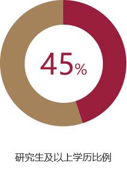
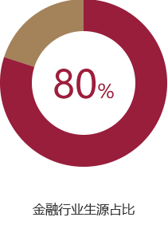

世界顶级商学院首次在中国授予其原版MBA学位。
本项目为清华大学五道口金融学院与美国常春藤盟校之一康奈尔大学旗下的约翰逊管理学院合作创办的双学位金融MBA项目。
全新的双学位金融MBA项目，依托清华大学和康奈尔大学两所世界名校一百多年来丰厚的教学资源，放眼国际金融市场，结合中国国情，倾力打造出一套融汇中外金融理论与最新实践的金融人才培育体系。项目按照国际上最先进的金融学科和商学院高等教育模式办学，继续保持与金融业界紧密合作的五道口传统，继承“严谨、勤奋、求实、创新”的清华学风，融合康奈尔大学在管理教育领域的多年积累，培养立足中国市场、兼具国际视野、精通专业知识的复合型金融领军人才。
- 第一批
- 第二批
- 第三批
报考时间

说明：全国MBA联考报名及考试时间以国家统一发布为准。
正式录取考生毕业前须提供托福100分/雅思7.0
免英文测试成绩要求：在英语为母语的国家获得全英语授课的本科学位 ,获得学制两年以上全英语授课项目的硕、博学位
注：一年制和一年半制全英文硕士项目不能免考
面试安排
| 申请批次 | 第一批 | 第二批 | 第三批 |
| 提交材料 截止日期 |
4月3日 | 6月5日 | 9月11日 |
| 中方及美方 联合面试时间 |
4月14-16日 | 6月16-18日 | 9月22-24日 |
| 在线申请 |
中文单独面试，问答形式，单独面试，20分钟左右
英文小组面试，无领导小组讨论，每组1小时左右
一、获得国家承认的本科毕业学历后，到2018年7月有3年或3年以上全职工作经历者。（包括大陆、港澳台及海外考生）
二、获得国家承认的硕士、博士毕业学历后，到2018年7月有2年或2年以上全职工作经历者。(包括大陆、港澳台及海外考生)
- 学空格制：2年
- 上课方式：隔周周末上课，个别课程采取周四到周日集中授课方式
- 空格空格：两次美国集中访学课程，各2-3周
- 课程语言：中文及英文课程各占 50%
- 师资阵容：两校师资各负责50%的教学内容
- 招生人数：70人
- 上课地点：北京清华大学五道口金融学院
- 开学日期：2018年9月
- 证书授予：清华大学硕士研究生毕业证书
- 证书授予：清华大学MBA（工商管理硕士）学位证书
- 证书授予：美国康奈尔大学MBA（工商管理硕士）学位证书
- 证书授予：※与康奈尔大学在其本部所授MBA学位具有完全相同的形式和效力
- 
-

- 
-
培养目标
清华大学五道口金融学院与康奈尔大学约翰逊管理学院联合创办的清华－康奈尔双学位金融MBA项目旨在培养立足国内、兼具国际视野的金融人才和行业领袖，为中国金融走向世界输送人才。
-
学习目标
完成金融专业基础课学习，熟练掌握微观金融工具相关知识，培养宏观金融素养，全面提升学生综合能力；将理论与实践相结合，安排参与金融行业实践活动，培养行业实践能力；以创新创业为方向，洞悉现代经济的原理和运行规律，培养拥有正直品德和承担社会责任的金融管理人才。
-
- 第一模块
- 基础模块
- 组织行为学I、组织行为学II
- 会计学与创业财务分析
- 战略管理
- 公司金融I、公司金融II
- 市场营销与创业营销
- 关键性及明辨性思维
- 管理经济学
-
- 第二模块
- 创业创新微观模块
- 投资学I 、投资学II
- 数据分析与创业决策
- 创业融资工具运用
- 运营管理
- 国际资本市场金融交易
- 全球性可持续发展
-
- 第三模块
- 创业创新宏观模块
- 金融沿革与创投市场
- 货币政策与宏观经济
- 战略新兴产业热点分析
- 互联网金融
- 外汇改革与对外投资
-
- 第四模块
- 高级进阶模块
- 跨文化沟通
- 金融行业职业规划
- (商业伦理)
- 资本市场专题课
- 金融改革前沿专题
- 博弈论及其商业应用
在学术上
项目汇聚了作为“金融黄埔”的清华五道口金融学院与常春藤名校康奈尔大学两所学校的多位顶级教授，他们都有世界顶级大学和商学院的背景，具备极高的专业学术造诣，同时拥有丰富的教学经验，享誉中外。
在业界导师方面
五道口优势不言而喻，我们会邀请到一行三会主要部门的负责人担纲授课，在这里，你可以聆听到他们对当前经济、金融以及政策的解读，这是五道口金融学院独特的优势。我们也可以通过校友的资源邀请到许多国内外业界精英与大家进行沟通分享。
- 清华师资(部分) |
- 康奈尔师资(部分)